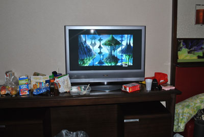
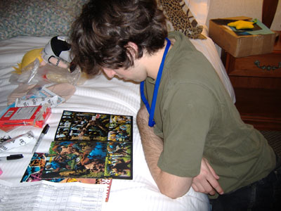

After over five years of attending cons, my friends and I have decided that $200 is the perfect
budget for a con within four hours of your house that lasts two or three days. Obviously, if you're
going further it may be more expensive, but regardless of what con you're
going to, this guide will help you to plan and stretch your budget with a minimal amount of headache.
Budget Breakdown
- $65 Hotel (two nights, five people in a room)
- $10 Gas (Carpool!!)
- $45 Registration/Badge (Prereg!!)
- $10 Parking (Those garages can be $20/day)
- $20 Food (Two small meals out--most of what you should eat is stuff you brought!)
- $10 Food (Pre-shop!)
- $40 Spending/Discretionary
HOTEL
Reserve the room well in advance of the con, and check the con's website for possible hotel discounts.
There are pros and cons of staying at the con-hotel. Pros include not having to trudge very far to
collapse into a heap, having a convienient place to keep all the crap you buy, and being able to go up
to the room to refresh/snack/touch up on makeup in the middle of the day. Cons include possible
overcrowded elevators/floors, loud people in the hallways at all times, and sometimes higher prices.
Have everyone staying in the room pay up as SOON as you get to the room, before they accidentally blow
all their cash on that awesome handmade totodile plushie or seventeen hours of Left 4 Dead. Whoever
reserved the room usually has to give the hotel a credit card in advance, and if everyone else skips
out on their share, then he or she is stuck with the bill--a very large, unfair bill.
More than four people usually means four people on the beds and two on the floor. Make sure that there are enough sleeping
bags for your friends on the floor. Consider giving them five dollars off the hotel-share if they sleep
on the floor, or pay for their pizza one night. Try to arrange who will sleep on the floor or in the same
beds in advance so there's no "I thought I was going to sleep with ___ !!" awkwardness going on.
When inviting people to stay in your hotel room, keep in mind if they are messy, smelly, or unreliable
about paying up. Ash may be fun to hang out with, but do you really want to smell his farts all night
while you're trying to sleep, or see his dirty socks in the sink when you go to brush your teeth?
It might be tempting to put more than six people in a room to cut costs, but keep in mind how many people
will be on a floor, how much more food and sleeping bags and food you'll need to bring, and the likelihood
of having unpleasant roomates. But if you're really strapped for cash and willing to put up with Ash and
Misty making out loudly all night, go ahead and invite them.
GAS
When deciding how to get there and whose car to take, keep in mind seat and luggage capacity, gas mileage
efficiency, and whether the driver can stay awake for all four hours of the road trip while he's supposed
to be driving. It's better to take two cars and have everyone ride comfortably than to squeeze all six
into a four-seater. Just believe me on this one. At the end of the trip have everyone give the driver five
or ten dollars, depending on how many times he had to fill up.
REGISTRATION
It varies from con to con, and depends also on when you register. Generally the more in advance that you
buy a badge, the cheaper it is. at AKON Dallas it was $45 for a three-day badge if you prereged, and $60
for a three day badge at the con. That's a big difference! Like, two whole volumes of Fruits Basket
difference!
One way to cut costs on registration is to volunteer. Most cons will give you a free badge if you
volunteer for 12-15 hours, but you have to apply in advance and there are some restrictions. I reccomend
you NOT volunteer if it is your first time at a particular con, or if the weekend is just packed with
stuff you really want to do at the con. I've had and heard about good and bad experiences with
volunteering. Try to talk to people who have volunteered at that con before you apply to see if it is
something you really want to do, and once you commit, be sure to follow through. The staff are counting
on you to help you out, and at many cons ditching your volunteer shift is a bannable offense.
PARKING
It's steep, and depends on how many cars you take. There are usually cheaper lots a little ways from the
hotel, but keep in mind the crime rate in the area and be smart about taking all of your belongings,
locking your car, and taking your keys with you. The best way to park off site is to have one person drop
off everyone and the luggage at the hotel front doors and then go to the parking site while everyone who
got dropped off checks in and lugs the luggage up to the 28th or 34th floor or whatever. Like with the
hotel, find out the parking rate for two/three days and collect the money for it at the BEGINNING of the
con so there aren't any "I forgot!" moments when the driver goes to pick up the car from the lot. Also keep in
mind that some garages and lots charge extra if you want to leave and return during your three day stay.
FOOD
The big lesson here is BRING FOOD with you to the con! Keep snacks in the hotel room, but also stuff them
in your bag or pocket every time you leave the hotel room in case you get hungry while waiting in line
for two hours for the Rocky Horror Picture show. Some people may want to bring a reusable water bottle
to carry around because it's easy to get dehydrated from walking around all day, especially if you are
in a troublesome costume.
You may think "who cares about food--there will be stuff to eat at the con!" and to an extent that is
true--but it's expensive food. Not that you shouldn't eat out at all. For $20 you should be able to eat out at least once a day if you order reasonably, and if you really want to eat somewhere nice you can always use some of your discretionary money for that. Many cons have discount pizzas you can order (don't get too much~where will you keep the leftovers? Don't ever order more that one pizza per two people!) When eating out you just have to decide--would you rather eat at restaurants nine times in one weekend or buy that boxed set of Trigun that you have always wanted? And if you are thinking of just going hungry, remember that cons are always more fun if you are well fed and well rested. For you AND for the people who have to put up with your hunger-induced grouchiness.
So what food should you bring? Here's a suggested shopping list. Each person should contribute $10 to
this before the con--send a reliable person with the shopping list so that you don' t end up with twelve
boxes of Special K and twelve packs of Twizzlers as your food for the weekend, or on the other extreme,
one box of whole-grain super healthy cereal and one pint of organic happy-cow milk. It basically comes
down to three categories: Snacks, Drinks, and Non-foods.
- Snackages:
- Granola Bars (LOTS)
- Apples/Oranges/Bananas
- Chips variety Pack
- Instant cup ramen
- Instant oatmeal
- ^ ^(Heat up water in the coffee maker in the room without adding coffee and then add the boiling water to the oatmeal in a bowl or ramen--wala!)
- Peanut Butter/Jelly
- Pretzels (these are good dipped in peanut butter too)
- Bread
- tea bags/instant coffee
- Cereal Variety Pack
Drinks:
- Milk (if you decide to bring cereal)
- Rum (Cause it's good in everything)
- Soda
Non Foods:
- Cooler (in case there is no fridge--all hotels have ice machines, so fill it up when you get there and you can have cold drinks)
- Trash Bags (Those little ones in hotel rooms will get disgusting and overflow very quickly!)
- Gladware (great to use as bowls, most people already have them, and if they make it home after the con yay, if not so what)
- Plastic spoons/forks/knives
- Napkins/Paper Towels
- Plastic Cups

Foods, Cartoon Network, and Pillows in a hotel room. Yes, those are pop-tarts and girl scout cookies.
SPENDING/DISCRETIONARY
This is your budget-bumper and fun-things budget. For $40 you can buy a lot of cool stuff, or one really
awesome cool thing. I find it a great amount for fun-budget. One year I used it to go ice skating, one
year I used it (and the money I saved from volunteering) to buy myself a pretty Kimono that I wore to
prom. This year I bought a crap ton of pokemon buttons, a t-shirt, and some shoes.
To avoid overspending, do your research before you go. Is there one thing you are really looking for?
If so, find out how much it costs online so you don't overpay at the con, and shop around at different
vendors before buying the first thing you see. Also keep in mind that many vendors put items on sale the
last day of the con so that they don't have to pack up their wares to take them home, but that high-demand items might sell out quickly.
With strict budget for shopping, you're more likely to get stuff you really want, rather than a bunch of
that you'll regret later when everyone else is enjoying their new DVDs or hanging up their awesome
art they bought.
Bounce your ideas for purchases off of friends if you are unsure, and always think "Would I rather have
this or do that?" before you buy.
Also keep in mind utility. Those tripp pants might seem really awesome at the con, but are then against
your school/work dresscode? Will you actually ever wear them? If you know how to sew, could you just as
easily make some for yourself? And the Yaoi paddle might seem irresistible for attracting yourself a
boyfriend, but if you live with your parents, it might make things awkward if they don't know about your
lifestyle.

John enjoying the fruits of his discretionary fund.
CLOSING NOTES
Hopefully this guide is helpful to you, no matter what con you are going to or where it is.
There are lots of ways to stretch your budget, and these are some of them. Each group of friends will
have to bend it to fit their needs, but I hope you got at least a few ideas from here that help!
My only other remarks are: Be sure bring a first aid kit and a costume-repair kit AND HAVE FUN!! That's
why you're going after all!!
Have a tip you want to share? Email it to me with the subject "$200 CON TIP" and I'll add it here.
Back to Articles